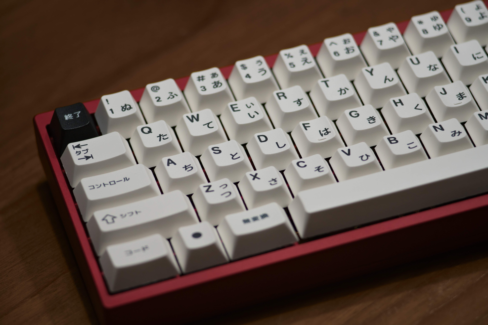
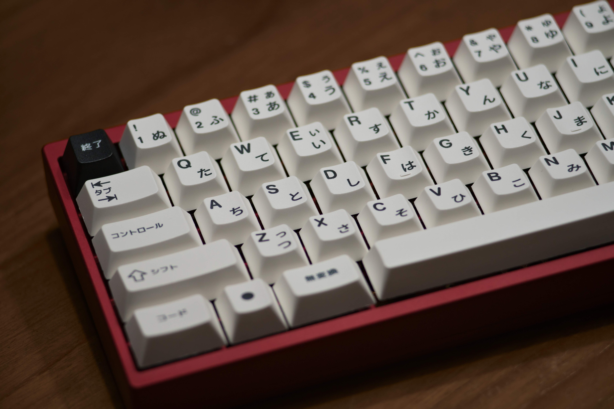

Welcome to Typophile!
Hello, this is Typophile. This website is dedicated to providing the essential information to keyboard hobbyists who want the perfect typing experience on their customised keyboard.
Contrary to common belief, there is a lot that goes into keyboards. It's quite the rabbit hole. There is so much that it can be quite overwhelming.
Typophile provides all the important information organised into boards, switches and mods. There is also the guide, which helps you create your perfect custom keyboard. Enjoy!